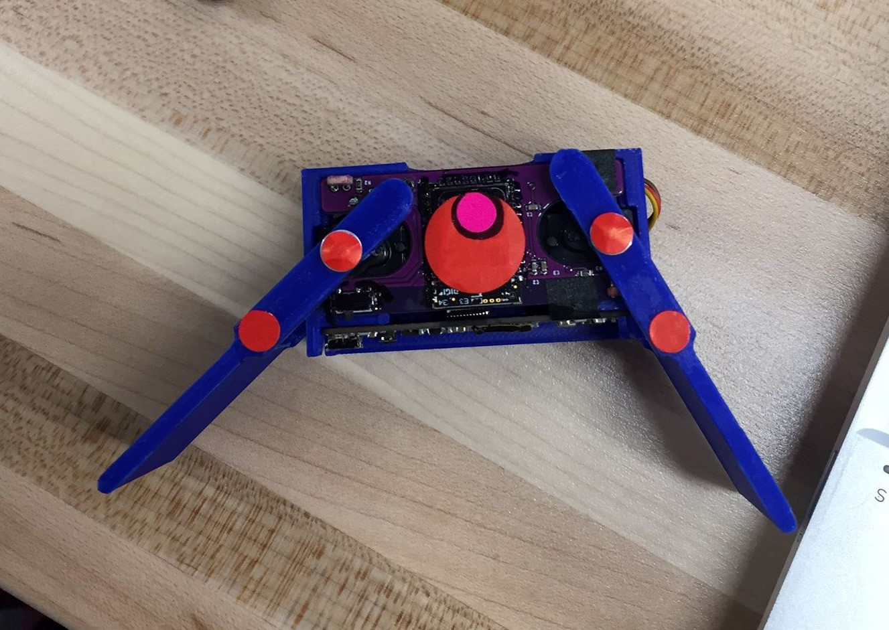
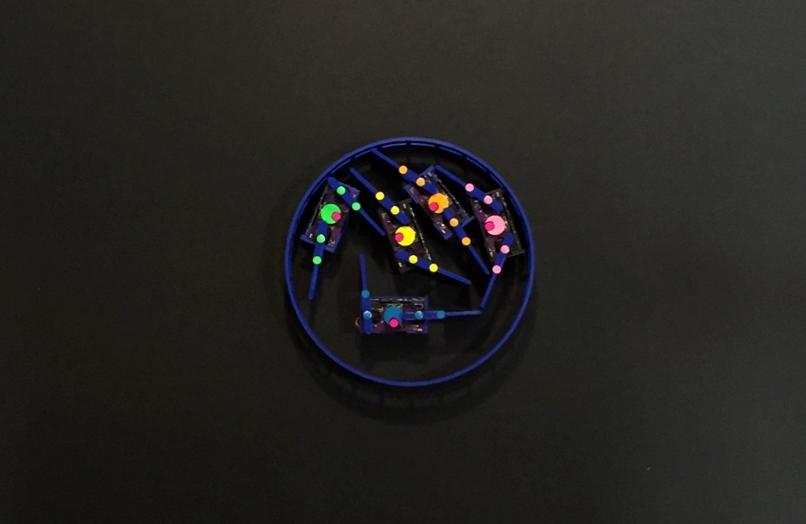

Vision Tracking Algorithms for Emergent Behavior Systems
|
Center for Robotics and Biosystems / Summer 2019 |
 |
|---|
|
Center for Robotics and Biosystems / Summer 2019 |
|
|---|
“Smarticle” robots were previously developed by researchers in
Northwestern and Georgia Tech as an emergent behavior system.
Several can be placed in a ring at once to form a “supersmarticle”, which
allows for collective motion.
We can use factors such as sensed light or even sound to simply vary
their activation levels to help move the supersmarticle in a specific
direction, e.g. to follow a light source, like in the picture below.
Check out a paper about smarticles
here.

Previously, the team used commercial trackers (OptiTrack), but needed a more accurate, 2-D vision tracking system. Additionally, servo motor angle information couldn’t be found accurately from the electronics alone.
We needed a vision tracker that found:
Because the shape of each smarticle was so symmetrical, I used color-coded stickers placed strategically to gather information about the position, orientation, and the servo angle for each arm. Colors were also used to discern between each smarticle. A black foamcore board was used to minimize incorrect detection of reflected colors, and a lot of modifications were made to the lighting to prevent glare, which would lead to dropouts in data.

I had made a frame-to-frame stitching algorithm specifically for tracking
of synthetic cells (another emergent behavior system). However, I could not
use the algorithm or a Kalman filter because of 1. the jerkiness of the
movements, 2. the low fps, and 3. certain orientations in which it was difficult
to assign arms to a certain robot. Therefore, the tracking algorithm used circle
detection on OpenCV to detect the sizes and colors of the dots. In particular,
circles larger than a certain diameter indicated the position of the smarticle.
The smaller circles, depending on the color and distance from the center,
indicated arms or the orientation marker for the robot. Circle detection also
allowed for tracking of the supersmarticle ring, to verify that the system was
moving in the desired direction.
The picture below illustrates the specific calculations performed. First the
orientation vector was found. Then the orientation vector was used to find joint
locations, then finally distance and an HSV color mask was used to find
the angles of the servos.
The experimental setup and tracking algorithm were able to track all movements successfully for the quality of the camera – with 30 fps (vs 120 fps used for previous experiments). Although manipulating the lighting was a difficult process, the new setup with the color-coding allowed for much more robust tracking. Overall, I was able to obtain a very clean set of data with positions, orientations, and servo angles for each smarticle tracked over time.
